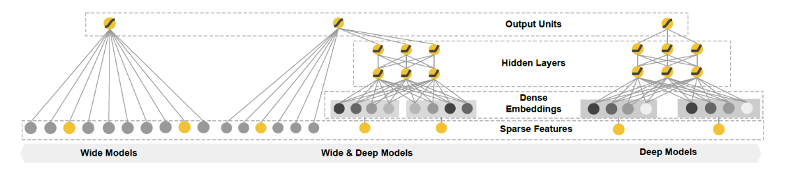
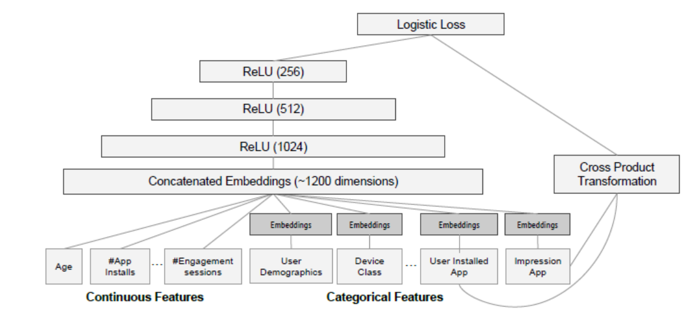
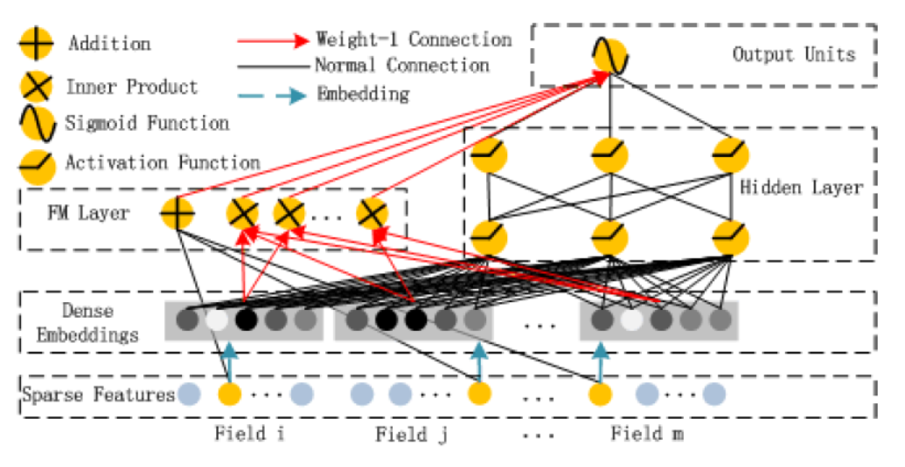
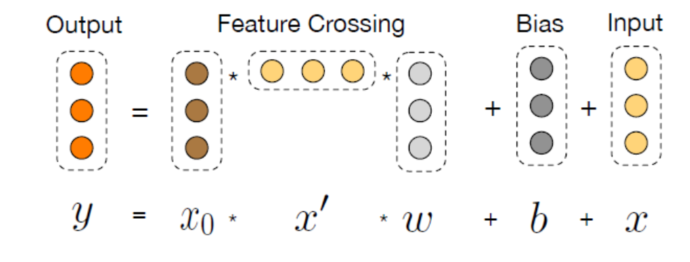
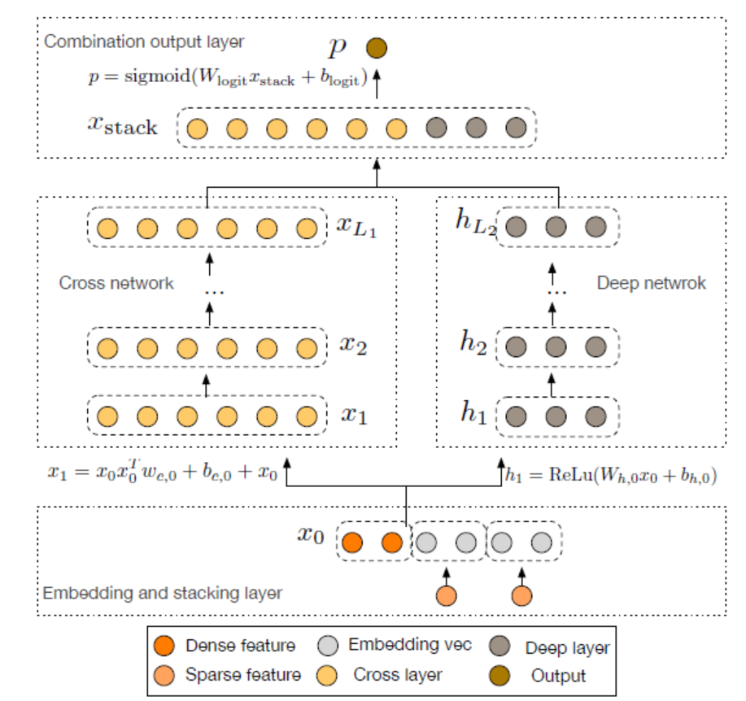
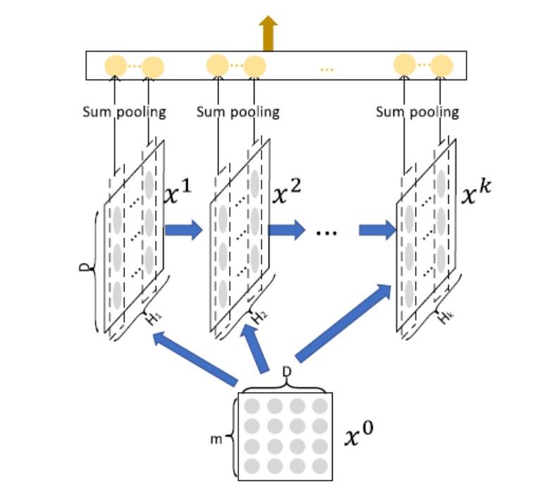
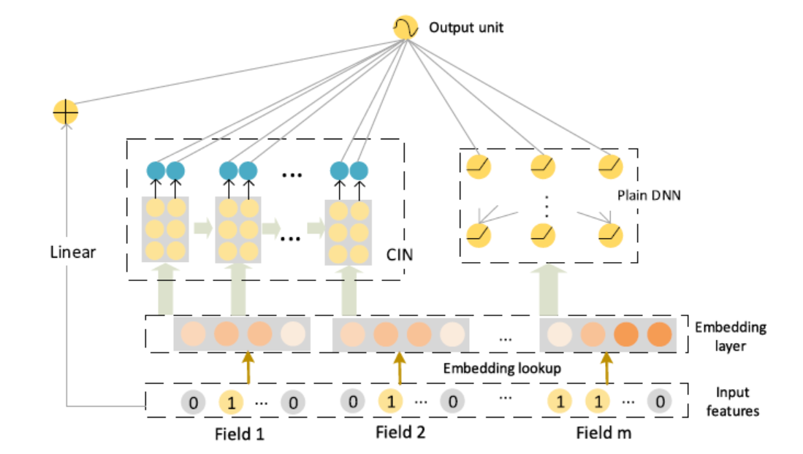
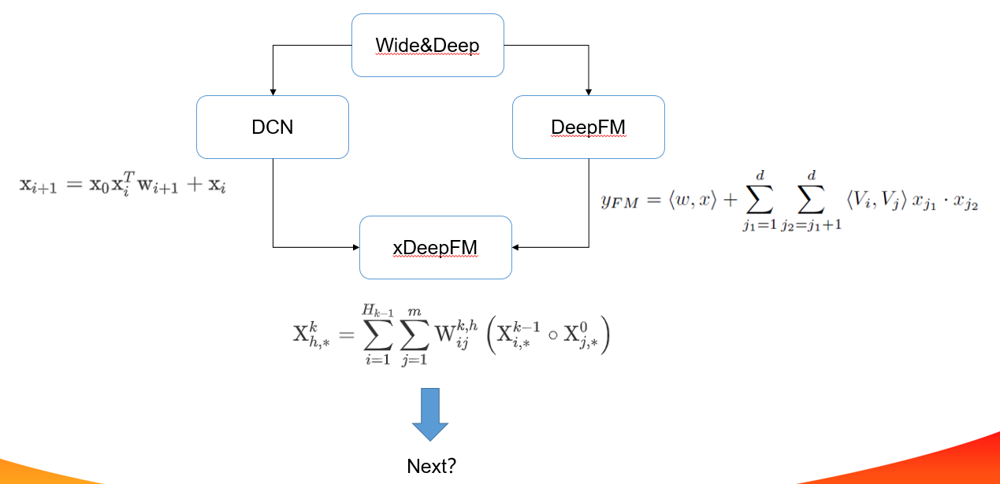

原文连接:https://www.cnblogs.com/gongyanzh/p/12098348.html
推荐系统模型演化
LR-->GBDT+LR
FM-->FFM-->GBDT+FM|FFM
FTRL-->GBDT+FTRL
Wide&DeepModel (Deep learning era)
将从以下3方面进行模型分析：
1.why（模型设计背后的原理）
2.how（具体怎么设计，如何应用）
3.discussion（模型讨论）
Wide&Deep
- why

Memorization 和 Generalization
假如你设计了一个外卖推荐系统gugu，用户睡觉醒来需要点个外卖，推荐系统推荐给用户了一个烤肉饭，用户如果购买了就标记为1，否则为0（说明不是一个好的推荐）。点击率预估就是衡量推荐系统的一个线下指标。
wide（memorization)
那如何对用户合适的商品呢，我们需要记住用户的爱好。所以，你设计了几个相关的特征，用一个简单的线性模型学习这些特征的权重组合，模型会预测对特定产品的点击概率, gugu2.0上线了。一段时间后，用户吃腻了，需要换个口味，但是模型只记住了特定的模式。对一些训练集中未出现的组合特征，由于模型没有见过，记忆中没有关于这个特征的信息，导致模型单一，用户就会不满意。
deep(generalization)
为了推荐一些新的食物而且和用户之前点的食物相关，但是要口味不一样。模型需要能都捕捉到食物之间的内在联系，普通的离散特征无法满足这一要求，embedding引入了低维稠密向量表示离散特征的方法，相似的食物在embedding的一些维度上可能是一样的。比如口水鸡和椒麻鸡，经过embedding用4个维度[鸡肉，辣，麻，甜]表示
[0.52,0.23,0.312,0.002] [0.52,0.23,0.45,0.002]
使用embedding后的稠密向量，可以充分挖掘不同食物的相似性，可以做出新的合理的推荐，使用前馈神经网络进行学习，对于没有见过的特征，由于深度学习的泛化能力，模型也可以做出不错的预测。但是你发现模型会过度泛化，当用户的行为比较稀疏时，gugu会推荐一些相关性较小的食物。
wide+deep
为什么不同时进行memorization和generalization呢？Wide&Deep联合线性模型和深度模型，利用两个模型的优点进行联合训练。
- how

input
wide: 包括sparse类型的特征以及cross类型的特征等。原始输入特征和手动交叉特征
deep: 稠密特征，包括real value类型的特征以及embedding后特征
training
wide: \(y=wx+b\)
deep: \(a^{(l+1)}=f(w^{(l)}a^{(l)}+b^{(l)})\)
joint: \(P(Y=1 | \mathbf{x})=\sigma\left(\mathbf{w}_{w i d e}^{T}[\mathbf{x}, \phi(\mathbf{x})]+\mathbf{w}_{d e e p}^{T} a_{f}^{\left(l_{f}\right)}+b\right)\)
Wide部分用FTRL+L1来训练；Deep部分用AdaGrad来训练。 使用BP算法采用joint train的方式训练。
- discussion
1.利用wide和deep组合，wide手动交叉特征，deep对离散进行embedding
2.对wide部分进行改进，自动化交叉特征，DeepFM，DCN
3.embedding在线训练得到，可否离线预训练
4.deep部分进行改进，AFM
离散值低阶vector-wise交互；连续值高阶bit-wise交互
vector-wise和bit-wise文末有解释
DeepFM

连续值离散化，低阶vector-wise组合，高阶bit-wise组合
DCN
- why
FM可以自动组合特征，但也仅限于二阶叉乘。告别人工组合特征，并且自动学习高阶的特征组合呢
\(x1x2x3\)
- how
拟合残差
\[
\mathbf{x}_{l+1}=\mathbf{x}_{0} \mathbf{x}_{l}^{T} \mathbf{w}_{l}+\mathbf{b}_{l}+\mathbf{x}_{l}=f\left(\mathbf{x}_{l}, \mathbf{w}_{l}, \mathbf{b}_{l}\right)+\mathbf{x}_{l}
\]

为什么work？
\[
\boldsymbol{x}_{1}=\boldsymbol{x}_{0} \boldsymbol{x}_{0}^{T} \boldsymbol{w}_{0}+\boldsymbol{x}_{0}=\left[\begin{array}{c}{x_{0,1}} \\{x_{0,2}}\end{array}\right]\left[x_{0,1}, x_{0,2}\right]\left[\begin{array}{c}{w_{0,1}} \\{w_{0,2}}\end{array}\right]+\left[\begin{array}{c}{x_{0,1}} \\{x_{0,1}}\end{array}\right]=\left[\begin{array}{c}{w_{0,1} x_{0,1}^{2}+w_{0,2} x_{0,1} x_{0,2}+x_{0,1}} \\{w_{0,1} x_{0,2} x_{0,1}+w_{0,2} x_{0,2}^{2}+x_{0,2}}\end{array}\right]
\]
\[ \begin{aligned}\boldsymbol{x}_{2} &=\boldsymbol{x}_{0} \boldsymbol{x}_{1}^{T} \boldsymbol{w}_{1}+\boldsymbol{x}_{1} \\&=\left[\begin{array}{l}{w_{1,1} x_{1,1}^{2}+w_{1,2} x_{1,1} x_{1,2}+x_{1,1}} \\{w_{1,1} x_{1,2} x_{1,1}+w_{1,2} x_{1,2}^{2}+x_{1,2}}\end{array}\right]\end{aligned} \]

- discussion
显示的高阶特征组合，特征组合阶数随着网络深度增加而增加
复杂度线性增长，相比DNN更快
利用最后的高阶组合特征，实际高层特征组合已经包含了低层的组合，考虑单层的组合引入最后的计算
特征交互还是bit-wise，对模型记忆能力提升是否有帮助
是否真的学到了高阶特征交互？输出是输入的标量乘积
连续值离散化，高阶bit-wise组合
xDeepFm
- why
传统特征工程缺点：
1.好的特征需要专家知识
2.大数据量下无法无法手动交叉特征
3.手动交叉特征的无法泛化
FM对所有特征组合，引入噪声；FNN、PNN聚焦于高阶特征，忽略了低阶特征；
DNN学习高阶特征交互，但是学习到特征交互是隐含的，bit-wise级的，那么DNN是否真的有效在高阶特征处理上？CIN被设计在vector-wise级进行学习高阶特征
embedding: 不同样本的长度不同，但embedding维度是一样的
隐式高阶特征：bit-wise
显示高阶特征交互： DCN，输出受限于和x0的交互、bit-wise
CIN(Compressed Interaction Network(CIN))
DCN没有有效的学习到高阶特征交互，输出是x0的标量乘积
\[
\begin{aligned}
\mathrm{x}_{i+1} &=\mathrm{x}_{0} \mathrm{x}_{i}^{T} \mathrm{w}_{i+1}+\mathrm{x}_{i} \\
&=\mathrm{x}_{0}\left(\left(\alpha^{i} \mathrm{x}_{0}\right)^{T} \mathrm{w}_{i+1}\right)+\alpha^{i} \mathrm{x}_{0} \\
&=\alpha^{i+1} \mathrm{x}_{0}
\end{aligned}
\]
但是标量并不意味着线性！！！
- how
bit-wise到vector-wise
显示交互
复杂度非指数级增长
\[
\mathrm{X}_{h, *}^{k}=\sum_{i=1}^{H_{k-1}} \sum_{j=1}^{m} \mathrm{W}_{i j}^{k, h}\left(\mathrm{X}_{i, *}^{k-1} \circ \mathrm{X}_{j, *}^{0}\right)
\]
取前一层的\(H_{k-1}\)的个vector，与输入层的
个vector，进行两两Hadamard乘积运算，得到\(H_{k-1}*m\)个 vector，然后加权求和
第
层的不同vector区别在于，对这\(H_{k-1}*m\)个 vector 求和的权重矩阵不同。 \(H_k\)即对应有多少个不同的权重矩阵\(W^k\)
1.为什么做Hadamard积
保持维度不变,做到vector-wise级交互
2.vector-wise交互
网络的每一层计算是以embedding向量的方式进行哈达玛积，保持embedding的结构
3.每一层的输出由当前输入和隐状态共同决定，类RNN
4.类CNN（装饰）

sum pooling 有效性：\(p_{i}^{k}=\sum_{j=1}^{D} \mathrm{X}_{i, j}^{k}\)
当只有一层，sum pooling就是两两向量的内积之和，降为FM
组合

\[
\hat{y}=\sigma\left(\mathbf{w}_{\text {linear}}^{T} \mathbf{a}+\mathbf{w}_{d n n}^{T} \mathbf{x}_{d n n}^{k}+\mathbf{w}_{\operatorname{cin}}^{T} \mathbf{p}^{+}+b\right)
\]
线性单元、DNN、CIN；记忆、泛化、记忆+泛化
1.CIN如何显示的执行特征交互
2.必须组合显示和隐式表达吗
3.xDeepFm参数设置影响
- discussion
1.特征交叉利用稠密向量进行，是否存在一个网络进行离散高阶向量级特征交互
2.交互深度改进，残差，全局信息观
连续值离散化，高阶bit-wise组合，CIN高阶vector-wise组合
bit-wise VS vector-wise
假设隐向量的维度为3维，如果两个特征(对应的向量分别为(a1,b1,c1)和(a2,b2,c2)的话）在进行交互时，交互的形式类似于f(w1 * a1 * a2,w2 * b1 * b2 ,w3 * c1 * c2)的话，此时我们认为特征交互是发生在元素级（bit-wise）上。如果特征交互形式类似于 f(w * (a1 * a2 ,b1 * b2,c1 * c2))的话，那么我们认为特征交互是发生在特征向量级（vector-wise）。
\(x1=(a1,b1,c1),x2=(a2,b2,c2)\)
bitwise: \(f(w1*a1*a2,w2*a2*b2,w3*a3*b3)\)
vector-wise: \(f(w(a1*a2,a2*b2,a3*b3))\)
explicitly VS implicitly
显式的特征交互和隐式的特征交互。以两个特征为例xi和xj，在经过一系列变换后，我们可以表示成 wij * (xi * xj)的形式，就可以认为是显式特征交互，否则的话，是隐式的特征交互。

reference:
https://zhuanlan.zhihu.com/p/55234968
Cheng H T, Koc L, Harmsen J, et al. Wide & deep learning for recommender systems[C]//Proceedings of the 1st workshop on deep learning for recommender systems. ACM, 2016: 7-10.
Guo H, Tang R, Ye Y, et al. DeepFM: a factorization-machine based neural network for CTR prediction[J]. arXiv preprint arXiv:1703.04247, 2017.
Wang R, Fu B, Fu G, et al. Deep & cross network for ad click predictions[C]//Proceedings of the ADKDD'17. ACM, 2017: 12.
Lian J, Zhou X, Zhang F, et al. xdeepfm: Combining explicit and implicit feature interactions for recommender systems[C]//Proceedings of the 24th ACM SIGKDD International Conference on Knowledge Discovery & Data Mining. ACM, 2018: 1754-1763.